Life at Bread & Bone
A little look inside our bakery — from freshly baked artisan bread and golden pastries to the people and moments that make Bread & Bone special.
Showing all photos
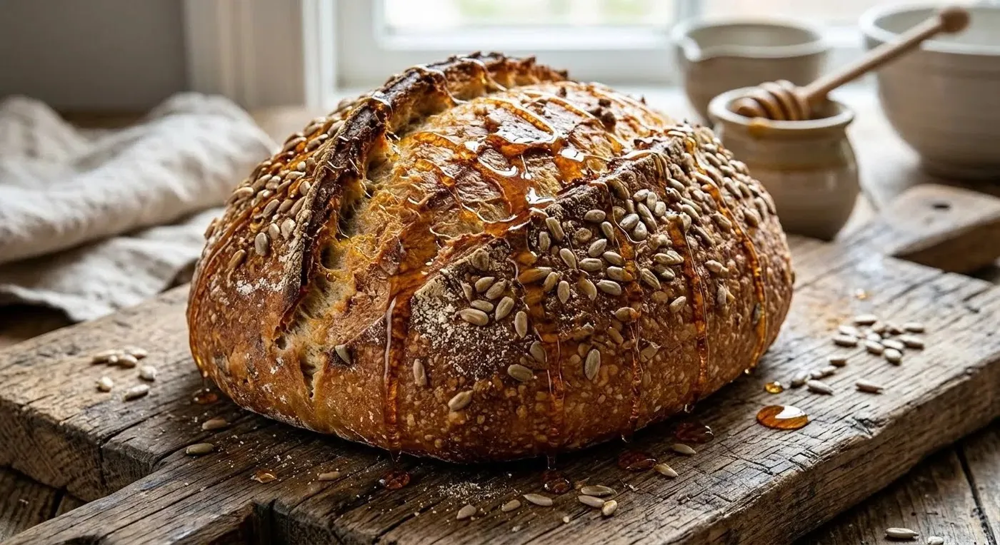
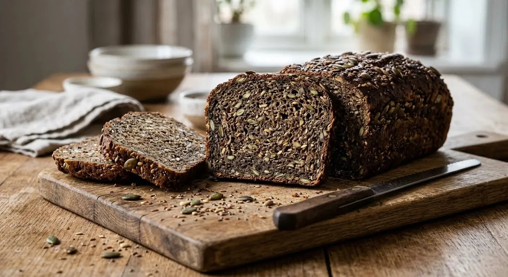
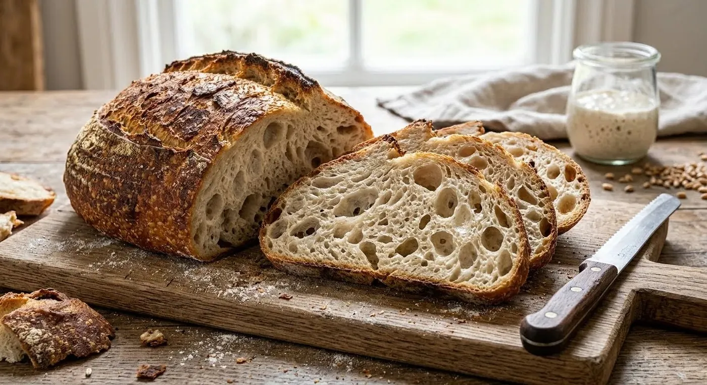
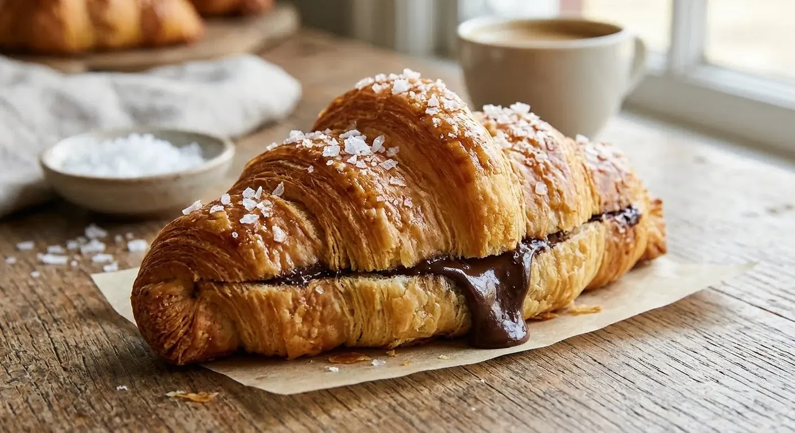
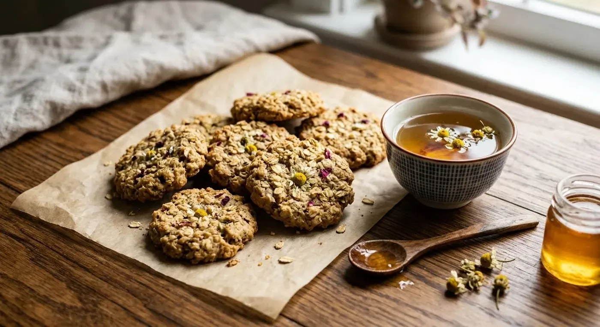
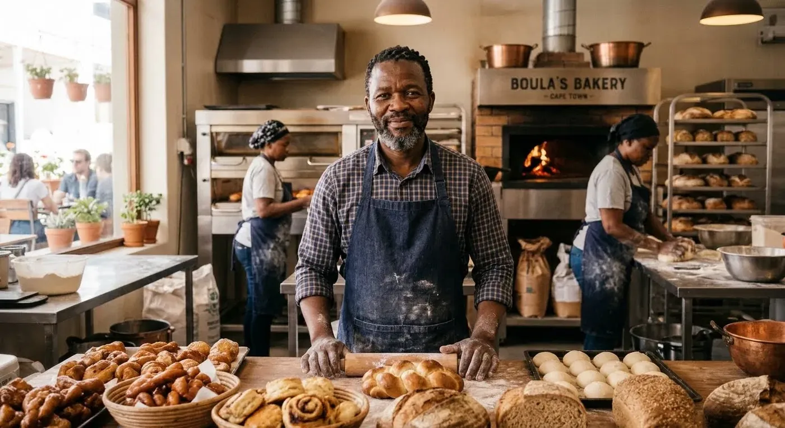
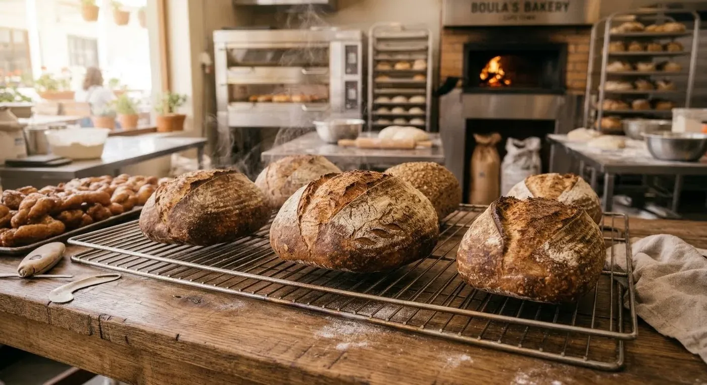
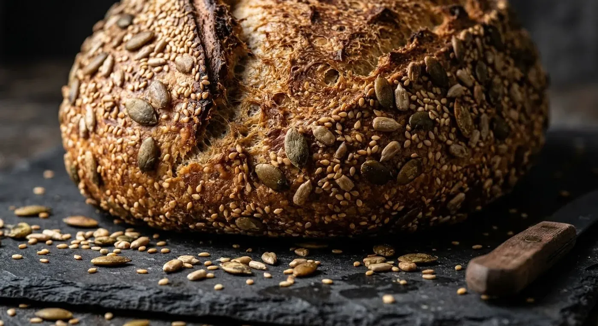
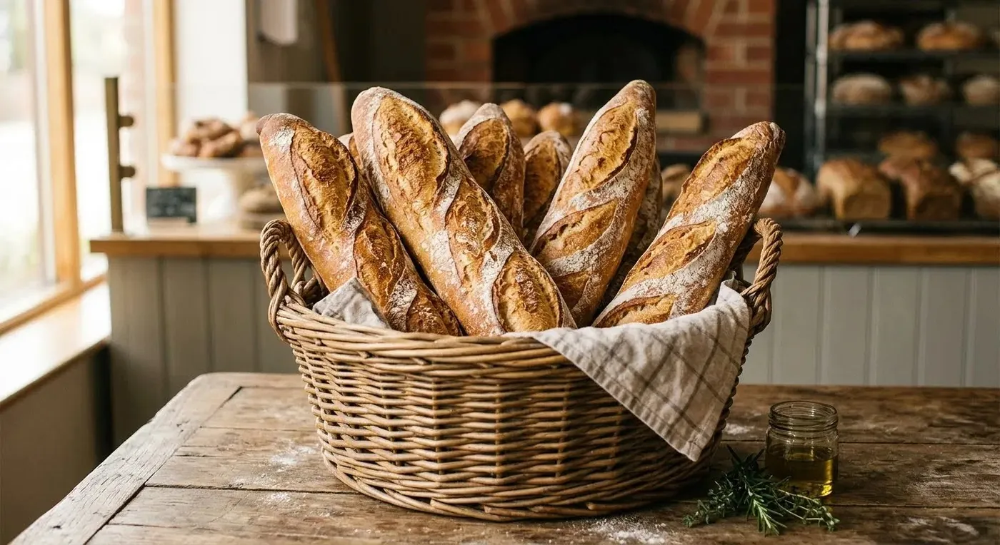
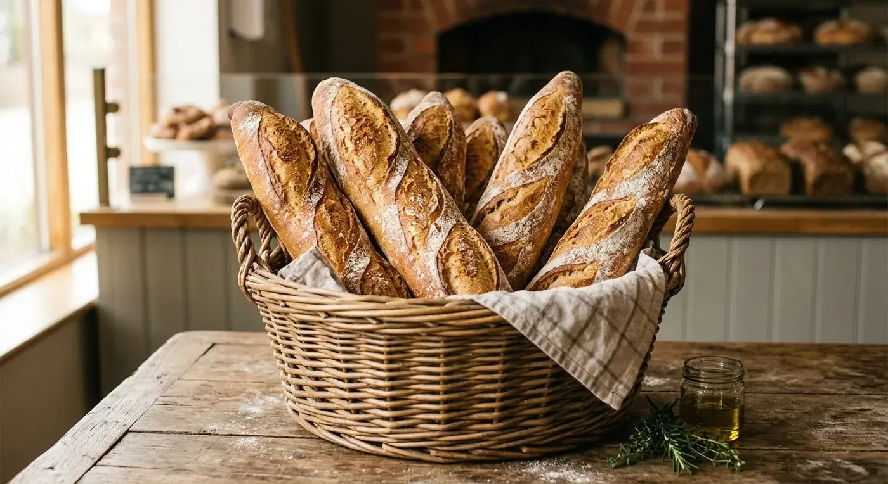
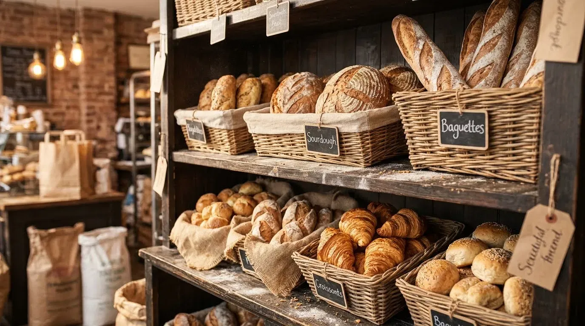
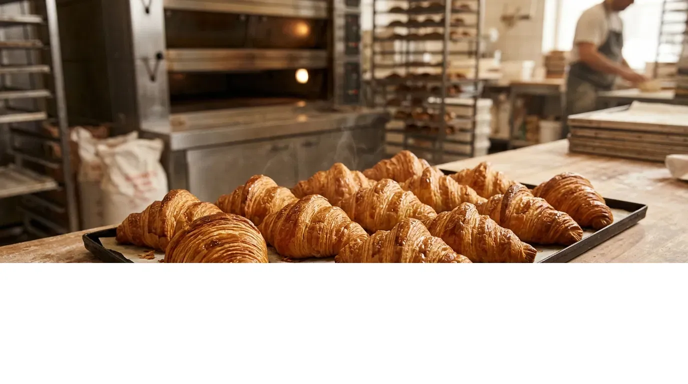
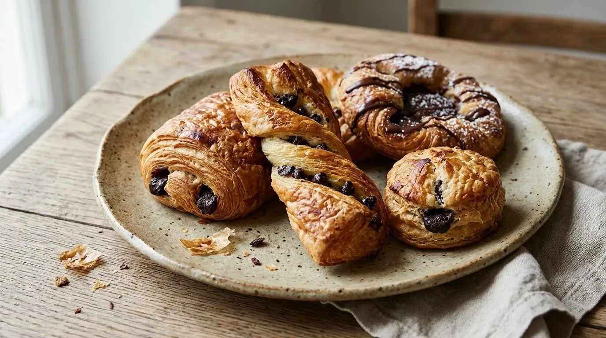
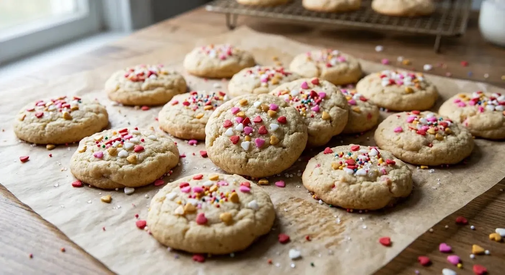
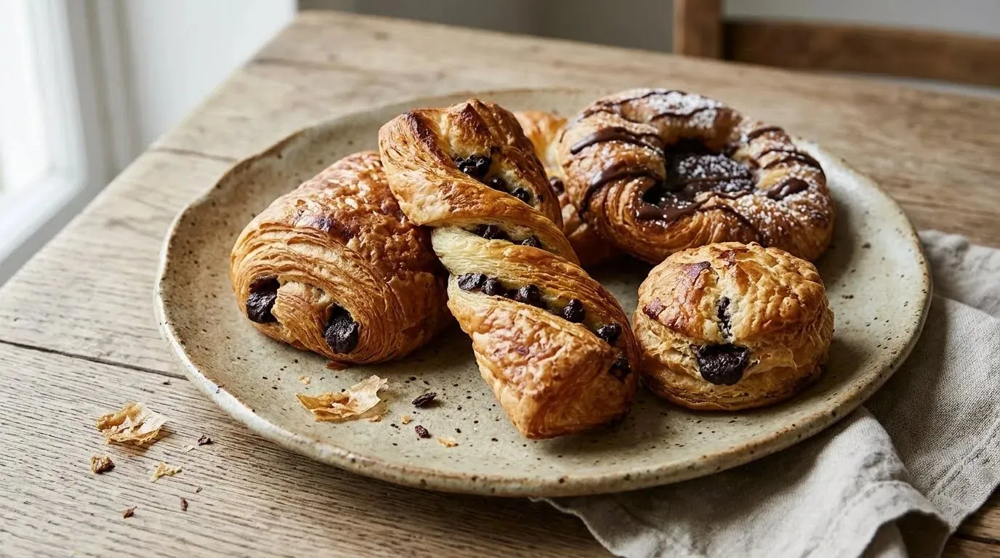
No photos match your search. Try another word or category.